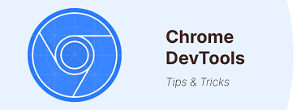
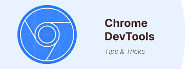

¿Qué son las Developer Tools?
Las herramientas de desarrollo de un navegador permiten inspeccionar y depurar código web.
Las herramientas de desarrollo de un navegador permiten inspeccionar y depurar código web.

En Chrome, puedes acceder a DevTools presionando F12 o Ctrl + Shift + I.
Para aprender más sobre las Developer Tools, visita el siguiente tutorial oficial.
Además de las Developer Tools, existen otras herramientas útiles como:
Existen muchas otras herramientas avanzadas, como: